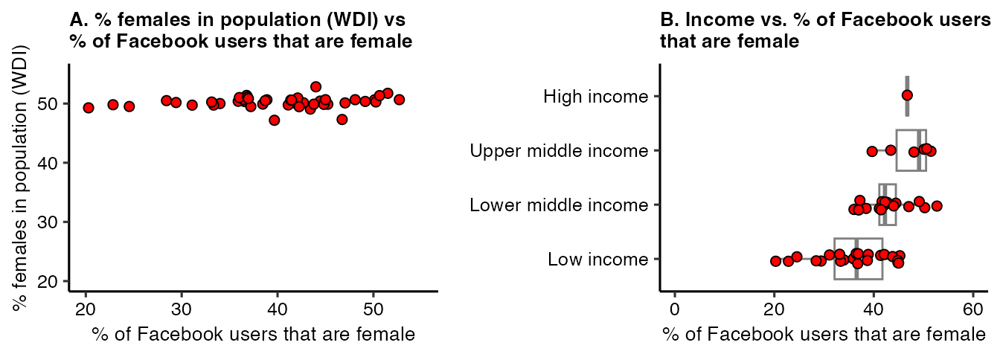

Example: Facebook Usage, Population Online, GDP, & Gender in Africa
Source:vignettes/example-pop-gdp-gender.Rmd
example-pop-gdp-gender.RmdHow does Facebook usage relate to socio-economic indicators? This vignette illustates the extent that Facebook usage relates to internet connectivity and per capita GDP in sub-Saharan Africa—as well as how Facebook data can be used to examine the gender digital divide.
Query data from WDI
We query data from the World Development Indicators (WDI). For each country, we query:
- Total population (
SP.POP.TOTL) - Male population (
SP.POP.TOTL.MA.ZS) - Female population (
SP.POP.TOTL.FE.ZS) - GDP per capita (
NY.GDP.PCAP.CD) - Individuals using the Internet, % of population
(
IT.NET.USER.ZS)
Query data from Facebook
We separately query the number of male and female monthly active users on Facebook for each country.
fb_df <- query_fb_marketing_api(
location_unit_type = "countries",
location_keys = map_param_vec(wdi_df$iso2c),
gender = map_param(1, 2),
version = VERSION,
creation_act = CREATION_ACT,
token = TOKEN)Cleanup data
Here we merge together the WDI and Facebook datasets queried above and clean-up the dataset.
fb_clean_df <- fb_df %>%
rename(iso2c = location_keys) %>%
mutate(gender = case_when(
gender == "1" ~ "fb_male",
gender == "2" ~ "fb_female"
)) %>%
pivot_wider(id_cols = c(iso2c),
names_from = gender,
values_from = estimate_mau_upper_bound) %>%
left_join(wdi_df, by = "iso2c") %>%
clean_names() %>%
mutate(fb_total = fb_female + fb_male,
fb_per_female = fb_female/fb_total*100,
wdi_per_female = sp_pop_totl_fe_zs,
per_fb_pop = fb_total/sp_pop_totl*100)
fb_clean_df %>%
kable() %>%
kable_styling() %>%
scroll_box(width = "100%",
height = "300px")| iso2c | fb_male | fb_female | x | country | iso3c | year | status | lastupdated | sp_pop_totl | sp_pop_totl_ma_zs | sp_pop_totl_fe_zs | ny_gdp_pcap_cd | it_net_user_zs | region | capital | longitude | latitude | income | lending | fb_total | fb_per_female | wdi_per_female | per_fb_pop |
|---|---|---|---|---|---|---|---|---|---|---|---|---|---|---|---|---|---|---|---|---|---|---|---|
| AO | 3300000 | 2400000 | 1 | Angola | AGO | 2021 | NA | 2024-03-28 | 34503774 | 49.41921 | 50.58079 | 1927.4741 | 32.602302 | Sub-Saharan Africa | Luanda | 13.24200 | -8.811550 | Lower middle income | IBRD | 5700000 | 42.10526 | 50.58079 | 16.5199320 |
| BJ | 1600000 | 1000000 | 2 | Benin | BEN | 2021 | NA | 2024-03-28 | 12996895 | 50.08666 | 49.91334 | 1360.9115 | 33.965331 | Sub-Saharan Africa | Porto-Novo | 2.63230 | 6.477900 | Lower middle income | IDA | 2600000 | 38.46154 | 49.91334 | 20.0047781 |
| BW | 690500 | 694000 | 3 | Botswana | BWA | 2021 | NA | 2024-03-28 | 2588423 | 49.36345 | 50.63655 | 7238.7961 | 73.500000 | Sub-Saharan Africa | Gaborone | 25.92010 | -24.654400 | Upper middle income | IBRD | 1384500 | 50.12640 | 50.63655 | 53.4881663 |
| BF | 2400000 | 1000000 | 4 | Burkina Faso | BFA | 2021 | NA | 2024-03-28 | 22100683 | 49.82062 | 50.17938 | 888.7811 | 21.579827 | Sub-Saharan Africa | Ouagadougou | -1.53395 | 12.360500 | Low income | IDA | 3400000 | 29.41176 | 50.17938 | 15.3841399 |
| BI | 715700 | 412400 | 5 | Burundi | BDI | 2021 | NA | 2024-03-28 | 12551213 | 49.65087 | 50.34913 | 221.1578 | 5.804922 | Sub-Saharan Africa | Bujumbura | 29.36390 | -3.378400 | Low income | IDA | 1128100 | 36.55704 | 50.34913 | 8.9879759 |
| CV | 157700 | 159300 | 6 | Cabo Verde | CPV | 2021 | NA | 2024-03-28 | 587925 | 49.72471 | 50.27512 | 3398.1654 | 69.762257 | Sub-Saharan Africa | Praia | -23.50870 | 14.921800 | Lower middle income | Blend | 317000 | 50.25237 | 50.27512 | 53.9184420 |
| CM | 3500000 | 2500000 | 7 | Cameroon | CMR | 2021 | NA | 2024-03-28 | 27198628 | 49.87101 | 50.12899 | 1654.2570 | 45.602174 | Sub-Saharan Africa | Yaounde | 11.51740 | 3.872100 | Lower middle income | Blend | 6000000 | 41.66667 | 50.12899 | 22.0599363 |
| CF | 119800 | 61700 | 8 | Central African Republic | CAF | 2021 | NA | 2024-03-28 | 5457154 | 49.99456 | 50.00546 | 461.1375 | 10.582640 | Sub-Saharan Africa | Bangui | 21.64070 | 5.630560 | Low income | IDA | 181500 | 33.99449 | 50.00546 | 3.3259094 |
| TD | 737800 | 218400 | 9 | Chad | TCD | 2021 | NA | 2024-03-28 | 17179740 | 50.19593 | 49.80407 | 685.6903 | 17.868879 | Sub-Saharan Africa | N’Djamena | 15.04450 | 12.104800 | Low income | IDA | 956200 | 22.84041 | 49.80407 | 5.5658584 |
| KM | 162400 | 113400 | 10 | Comoros | COM | 2021 | NA | 2024-03-28 | 821625 | 50.23009 | 49.77003 | 1577.4708 | 27.336943 | Sub-Saharan Africa | Moroni | 43.24180 | -11.698600 | Lower middle income | IDA | 275800 | 41.11675 | 49.77003 | 33.5676251 |
| CD | 5000000 | 2800000 | 11 | Congo, Dem. Rep. | COD | 2021 | NA | 2024-03-28 | 95894118 | 49.61186 | 50.38815 | 576.9747 | 22.901585 | Sub-Saharan Africa | Kinshasa | 15.32220 | -4.325000 | Low income | IDA | 7800000 | 35.89744 | 50.38815 | 8.1339713 |
| CG | 683100 | 501600 | 12 | Congo, Rep. | COG | 2021 | NA | 2024-03-28 | 5835806 | 49.94056 | 50.05944 | 2540.4732 | NA | Sub-Saharan Africa | Brazzaville | 15.26620 | -4.276700 | Lower middle income | Blend | 1184700 | 42.33983 | 50.05944 | 20.3005377 |
| CI | 5400000 | 3200000 | 13 | Cote d’Ivoire | CIV | 2021 | NA | 2024-03-28 | 27478249 | 50.50436 | 49.49564 | 2613.3789 | 45.425533 | Sub-Saharan Africa | Yamoussoukro | -4.03050 | 5.332000 | Lower middle income | IDA | 8600000 | 37.20930 | 49.49564 | 31.2974819 |
| GQ | 113900 | 74900 | 14 | Equatorial Guinea | GNQ | 2021 | NA | 2024-03-28 | 1634466 | 52.82306 | 47.17694 | 7406.0850 | 53.922402 | Sub-Saharan Africa | Malabo | 8.77410 | 3.752300 | Upper middle income | IBRD | 188800 | 39.67161 | 47.17694 | 11.5511733 |
| ER | 11500 | 6600 | 15 | Eritrea | ERI | 2021 | NA | 2024-03-28 | 3620312 | 49.32835 | 50.67165 | NA | 21.730386 | Sub-Saharan Africa | Asmara | 38.91830 | 15.331500 | Low income | IDA | 18100 | 36.46409 | 50.67165 | 0.4999569 |
| SZ | 244200 | 236000 | 16 | Eswatini | SWZ | 2021 | NA | 2024-03-28 | 1192271 | 49.63897 | 50.36112 | 4068.5738 | 58.912916 | Sub-Saharan Africa | Mbabane | 31.46590 | -26.522500 | Lower middle income | IBRD | 480200 | 49.14619 | 50.36112 | 40.2760782 |
| ET | 6000000 | 3000000 | 17 | Ethiopia | ETH | 2021 | NA | 2024-03-28 | 120283026 | 50.25098 | 49.74902 | 925.0007 | 16.698103 | Sub-Saharan Africa | Addis Ababa | 38.74680 | 9.022740 | Low income | IDA | 9000000 | 33.33333 | 49.74902 | 7.4823525 |
| GA | 505700 | 388100 | 18 | Gabon | GAB | 2021 | NA | 2024-03-28 | 2341179 | 50.93207 | 49.06788 | 8635.7971 | 71.749406 | Sub-Saharan Africa | Libreville | 9.45162 | 0.388320 | Upper middle income | IBRD | 893800 | 43.42135 | 49.06788 | 38.1773457 |
| GM | 394000 | 195200 | 19 | Gambia, The | GMB | 2021 | NA | 2024-03-28 | 2639916 | 49.74094 | 50.25902 | 772.1515 | 32.962290 | Sub-Saharan Africa | Banjul | -16.58850 | 13.449500 | Low income | IDA | 589200 | 33.12967 | 50.25902 | 22.3188920 |
| GH | 5500000 | 4100000 | 20 | Ghana | GHA | 2021 | NA | 2024-03-28 | 32833031 | 49.87519 | 50.12481 | 2422.0859 | 68.200000 | Sub-Saharan Africa | Accra | -0.20795 | 5.570450 | Lower middle income | IDA | 9600000 | 42.70833 | 50.12481 | 29.2388479 |
| GN | 1700000 | 1200000 | 21 | Guinea | GIN | 2021 | NA | 2024-03-28 | 13531906 | 49.40841 | 50.59159 | 1189.1760 | 34.680124 | Sub-Saharan Africa | Conakry | -13.70000 | 9.516670 | Low income | IDA | 2900000 | 41.37931 | 50.59159 | 21.4308317 |
| GW | 218600 | 139100 | 22 | Guinea-Bissau | GNB | 2021 | NA | 2024-03-28 | 2060721 | 49.36214 | 50.63786 | 795.1186 | 35.154987 | Sub-Saharan Africa | Bissau | -15.18040 | 11.803700 | Low income | IDA | 357700 | 38.88734 | 50.63786 | 17.3580024 |
| KE | 9000000 | 7200000 | 23 | Kenya | KEN | 2021 | NA | 2024-03-28 | 53005614 | 49.57811 | 50.42188 | 2069.6611 | 28.757528 | Sub-Saharan Africa | Nairobi | 36.81260 | -1.279750 | Lower middle income | Blend | 16200000 | 44.44444 | 50.42188 | 30.5628004 |
| LS | 324800 | 361900 | 24 | Lesotho | LSO | 2021 | NA | 2024-03-28 | 2281454 | 49.34125 | 50.65875 | 1029.5062 | 47.982999 | Sub-Saharan Africa | Maseru | 27.71670 | -29.520800 | Lower middle income | IDA | 686700 | 52.70133 | 50.65875 | 30.0992262 |
| LR | 554800 | 451500 | 25 | Liberia | LBR | 2021 | NA | 2024-03-28 | 5193416 | 49.77789 | 50.22211 | 675.6632 | 33.633159 | Sub-Saharan Africa | Monrovia | -10.79570 | 6.300390 | Low income | IDA | 1006300 | 44.86734 | 50.22211 | 19.3764567 |
| MG | 2300000 | 1900000 | 26 | Madagascar | MDG | 2021 | NA | 2024-03-28 | 28915653 | 50.11450 | 49.88550 | 503.3521 | 19.730168 | Sub-Saharan Africa | Antananarivo | 45.71670 | -20.466700 | Low income | IDA | 4200000 | 45.23810 | 49.88550 | 14.5250048 |
| MW | 985000 | 572800 | 27 | Malawi | MWI | 2021 | NA | 2024-03-28 | 19889742 | 48.62205 | 51.37795 | 633.6097 | 24.405601 | Sub-Saharan Africa | Lilongwe | 33.77030 | -13.989900 | Low income | IDA | 1557800 | 36.76980 | 51.37795 | 7.8321780 |
| ML | 1900000 | 617700 | 28 | Mali | MLI | 2021 | NA | 2024-03-28 | 21904983 | 50.49419 | 49.50581 | 881.5101 | 34.490000 | Sub-Saharan Africa | Bamako | -7.50034 | 13.566700 | Low income | IDA | 2517700 | 24.53430 | 49.50581 | 11.4937318 |
| MR | 898500 | 505800 | 29 | Mauritania | MRT | 2021 | NA | 2024-03-28 | 4614974 | 48.98381 | 51.01621 | 1998.3940 | 58.758190 | Sub-Saharan Africa | Nouakchott | -15.98240 | 18.236700 | Lower middle income | IDA | 1404300 | 36.01794 | 51.01621 | 30.4292072 |
| MU | 550600 | 510200 | 30 | Mauritius | MUS | 2021 | NA | 2024-03-28 | 1266334 | 49.34472 | 50.65528 | 9068.9802 | 67.580000 | Sub-Saharan Africa | Port Louis | 57.49770 | -20.160500 | Upper middle income | IBRD | 1060800 | 48.09578 | 50.65528 | 83.7693689 |
| MZ | 2200000 | 1600000 | 31 | Mozambique | MOZ | 2021 | NA | 2024-03-28 | 32077072 | 49.06066 | 50.93934 | 504.0378 | 17.372837 | Sub-Saharan Africa | Maputo | 32.57130 | -25.966400 | Low income | IDA | 3800000 | 42.10526 | 50.93934 | 11.8464678 |
| NA | 460200 | 488600 | 32 | Namibia | NAM | 2021 | NA | 2024-03-28 | 2530151 | 48.26455 | 51.73545 | 4919.1890 | 52.973479 | Sub-Saharan Africa | Windhoek | 17.09310 | -22.564800 | Upper middle income | IBRD | 948800 | 51.49663 | 51.73545 | 37.4997382 |
| NE | 607100 | 154500 | 33 | Niger | NER | 2021 | NA | 2024-03-28 | 25252722 | 50.72378 | 49.27622 | 590.6295 | 22.386139 | Sub-Saharan Africa | Niamey | 2.10730 | 13.514000 | Low income | IDA | 761600 | 20.28624 | 49.27622 | 3.0159125 |
| NG | 28700000 | 21000000 | 34 | Nigeria | NGA | 2021 | NA | 2024-03-28 | 213401323 | 50.52781 | 49.47219 | 2065.7744 | 55.363714 | Sub-Saharan Africa | Abuja | 7.48906 | 9.058040 | Lower middle income | Blend | 49700000 | 42.25352 | 49.47219 | 23.2894526 |
| RW | 908900 | 530800 | 35 | Rwanda | RWA | 2021 | NA | 2024-03-28 | 13461888 | 48.89536 | 51.10464 | 821.1714 | 30.461817 | Sub-Saharan Africa | Kigali | 30.05870 | -1.953250 | Low income | IDA | 1439700 | 36.86879 | 51.10464 | 10.6946366 |
| ST | 38500 | 34200 | 36 | Sao Tome and Principe | STP | 2021 | NA | 2024-03-28 | 223107 | 49.88862 | 50.11138 | 2350.4527 | 51.204092 | Sub-Saharan Africa | Sao Tome | 6.60710 | 0.206180 | Lower middle income | IDA | 72700 | 47.04264 | 50.11138 | 32.5852618 |
| SN | 2900000 | 1700000 | 37 | Senegal | SEN | 2021 | NA | 2024-03-28 | 16876720 | 49.16273 | 50.83727 | 1633.5601 | 58.054819 | Sub-Saharan Africa | Dakar | -17.47340 | 14.724700 | Lower middle income | IDA | 4600000 | 36.95652 | 50.83727 | 27.2564811 |
| SC | 45700 | 40100 | 38 | Seychelles | SYC | 2021 | NA | 2024-03-28 | 99258 | 52.69040 | 47.30866 | 12963.0590 | 81.593072 | Sub-Saharan Africa | Victoria | 55.44660 | -4.630900 | High income | IBRD | 85800 | 46.73660 | 47.30866 | 86.4413952 |
| SL | 704800 | 549000 | 39 | Sierra Leone | SLE | 2021 | NA | 2024-03-28 | 8420641 | 50.10119 | 49.89883 | 504.6213 | NA | Sub-Saharan Africa | Freetown | -13.21340 | 8.482100 | Low income | IDA | 1253800 | 43.78689 | 49.89883 | 14.8896028 |
| SO | 1600000 | 1300000 | 40 | Somalia | SOM | 2021 | NA | 2024-03-28 | 17065581 | 50.13382 | 49.86618 | 576.5237 | NA | Sub-Saharan Africa | Mogadishu | 45.32540 | 2.075150 | Low income | IDA | 2900000 | 44.82759 | 49.86618 | 16.9932685 |
| ZA | 15300000 | 15700000 | 41 | South Africa | ZAF | 2021 | NA | 2024-03-28 | 59392255 | 48.65046 | 51.34953 | 7073.6128 | 72.310492 | Sub-Saharan Africa | Pretoria | 28.18710 | -25.746000 | Upper middle income | IBRD | 31000000 | 50.64516 | 51.34953 | 52.1953578 |
| SS | 608100 | 241400 | 42 | South Sudan | SSD | 2021 | NA | 2024-03-28 | 10748272 | 49.50176 | 50.49824 | NA | NA | Sub-Saharan Africa | Juba | 31.60000 | 4.850000 | Low income | IDA | 849500 | 28.41672 | 50.49824 | 7.9035960 |
| TZ | 4800000 | 3400000 | 44 | Tanzania | TZA | 2021 | NA | 2024-03-28 | 63588334 | 49.40789 | 50.59211 | 1146.0320 | 31.633131 | Sub-Saharan Africa | Dodoma | 35.73820 | -6.174860 | Lower middle income | IDA | 8200000 | 41.46341 | 50.59211 | 12.8954471 |
| TG | 786300 | 354800 | 45 | Togo | TGO | 2021 | NA | 2024-03-28 | 8644829 | 50.26448 | 49.73552 | 976.6662 | 34.984055 | Sub-Saharan Africa | Lome | 1.22550 | 6.122800 | Low income | IDA | 1141100 | 31.09281 | 49.73552 | 13.1997984 |
| UG | 1900000 | 1200000 | 46 | Uganda | UGA | 2021 | NA | 2024-03-28 | 45853778 | 49.50658 | 50.49342 | 883.4657 | 10.342420 | Sub-Saharan Africa | Kampala | 32.57290 | 0.314269 | Low income | IDA | 3100000 | 38.70968 | 50.49342 | 6.7606207 |
| ZM | 2200000 | 1800000 | 47 | Zambia | ZMB | 2021 | NA | 2024-03-28 | 19473125 | 49.34495 | 50.65505 | 1134.7135 | 21.231531 | Sub-Saharan Africa | Lusaka | 28.29370 | -15.398200 | Low income | IDA | 4000000 | 45.00000 | 50.65505 | 20.5411304 |
| ZW | 1400000 | 1100000 | 48 | Zimbabwe | ZWE | 2021 | NA | 2024-03-28 | 15993524 | 47.16715 | 52.83285 | 1773.9204 | 34.813971 | Sub-Saharan Africa | Harare | 31.06720 | -17.831200 | Lower middle income | Blend | 2500000 | 44.00000 | 52.83285 | 15.6313268 |
Analysis
Setup
Below we create a theme that we will use across figures.
## Make theme for figures
p_theme <- theme(plot.title = element_text(face = "bold", size = 10),
plot.subtitle = element_text(face = "italic", size = 10),
axis.text = element_text(color = "black"),
axis.title = element_text(size = 10))Facebook Usage, Internet Connectivity, and GDP
We create figures to show the distribution of the percent of population on Facebook and the correlation of this indicator with percent of population online and GDP as measured by WDI. Panel A shows notable variation in the percent of population on Facebook—values range from about 0% to over 75%. Both the percent of population online and per capita GDP appear positively correlated with the percent of population on Facebook.
p_1a <- fb_clean_df %>%
ggplot() +
geom_histogram(aes(x = per_fb_pop),
fill = "#4267B2",
color = "black") +
labs(x = "% population on Facebook",
y = "N countries",
title = "A. % population on Facebook\nacross countries") +
theme_classic2() +
p_theme
p_1b <- fb_clean_df %>%
ggplot() +
geom_point(aes(x = per_fb_pop,
y = it_net_user_zs),
fill = "#4267B2",
pch = 21) +
labs(x = "% population on Facebook",
y = "% population using internet",
title = "B. Internet connectivity vs\n% population on Facebook") +
xlim(0, 100) +
ylim(0, 100) +
theme_classic2() +
p_theme
p_1c <- fb_clean_df %>%
ggplot() +
geom_point(aes(x = per_fb_pop,
y = ny_gdp_pcap_cd),
fill = "#4267B2",
pch = 21) +
labs(x = "% population on Facebook",
y = "GDP per capita",
title = "C. Per capita GDP vs\n% population on Facebook") +
theme_classic2() +
p_theme
ggarrange(p_1a, p_1b, p_1c, nrow = 1)
Digital Gender Divide
Here we examine variation in the percent of Facebook users that are female across countries. Panel A shows notable variation in the percent of female Facebook users across countries, ranging from 20 to over 50%—while, as expected, the percent of female population as measured by WDI is about 50% for all countries.
p_2a <- fb_clean_df %>%
ggplot() +
geom_point(aes(x = fb_per_female,
y = wdi_per_female),
pch = 21,
size = 2,
fill = "red") +
xlim(20, 55) +
ylim(20, 55) +
theme_classic2() +
p_theme +
labs(x = "% of Facebook users that are female",
y = "% females in population (WDI)",
title = "A. % females in population (WDI) vs\n% of Facebook users that are female")
p_2b <- fb_clean_df %>%
mutate(income = income %>%
factor(levels = c("Low income",
"Lower middle income",
"Upper middle income",
"High income"))) %>%
ggplot(aes(x = fb_per_female,
y = income)) +
geom_boxplot(color = "gray50",
outlier.size = 0) +
geom_jitter(width = 0,
height = 0.1,
pch = 21,
size = 2,
fill = "red") +
labs(x = "% of Facebook users that are female",
y = NULL,
title = "B. Income vs. % of Facebook users\nthat are female") +
theme_classic2() +
scale_x_continuous(breaks = seq(0, 60, 20),
limits = c(0, 60)) +
p_theme
ggarrange(p_2a, p_2b, nrow = 1, widths = c(0.45, 0.55))